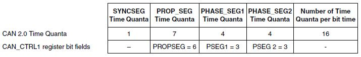
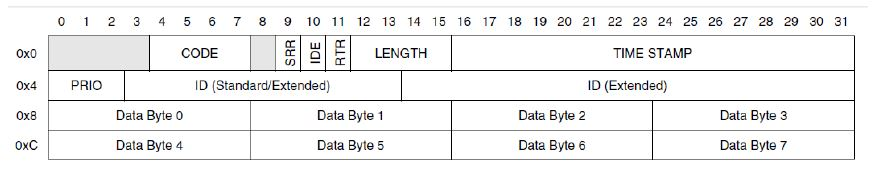

Hence,
- fSclock (time quantum freq.) = (16 time quanta/bit rate period) × (500 K bit rate periods/sec)= 8MHz
- Prescaler Value (PRESDIV + 1) = fCANCLK / fSclock = 8 MHz / 8 MHz = 1
- PRESDIV = 1 – 1 = 0
CAN 2FD example timing segments summary. Sclock = 8MHz and bit rate = 500KHz

CAN 2.0 message buffer structure
Bellow is the CAN 2.0 message buffer. The NXP FlexCAN header file implements a structure of words
instead of bytes, where a word is four bytes.

 1.8.15
1.8.15